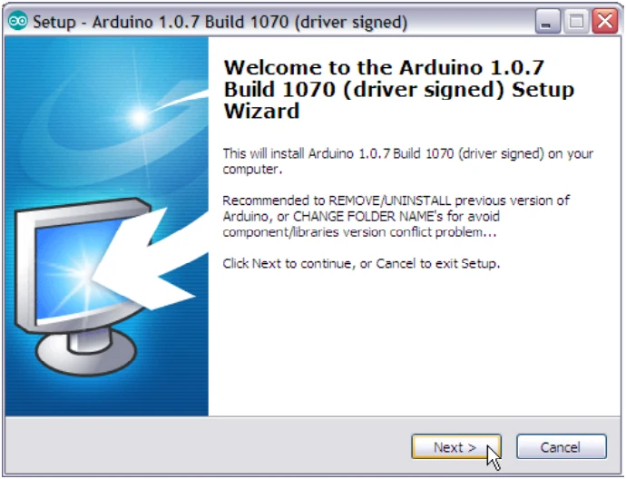
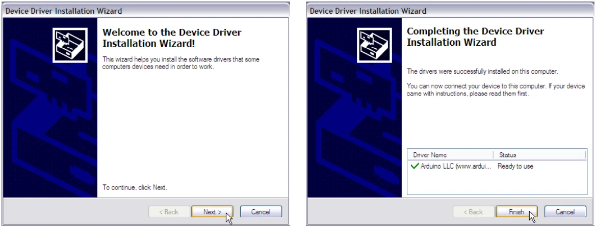
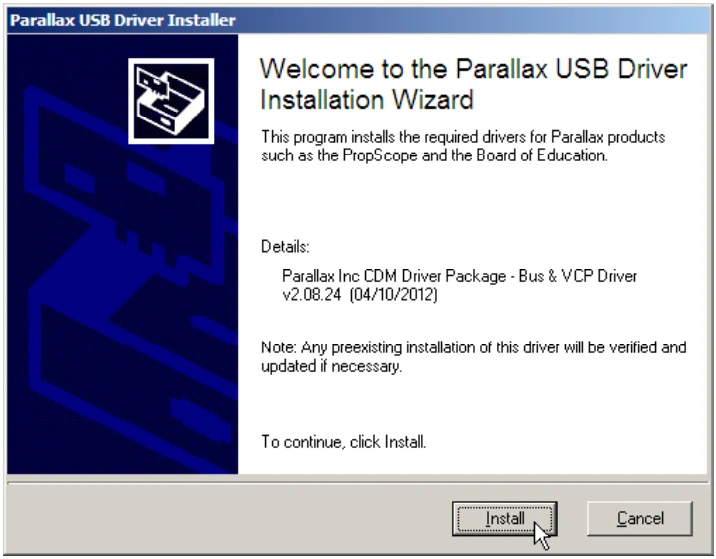
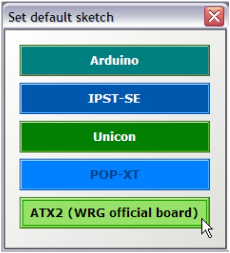
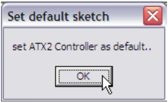
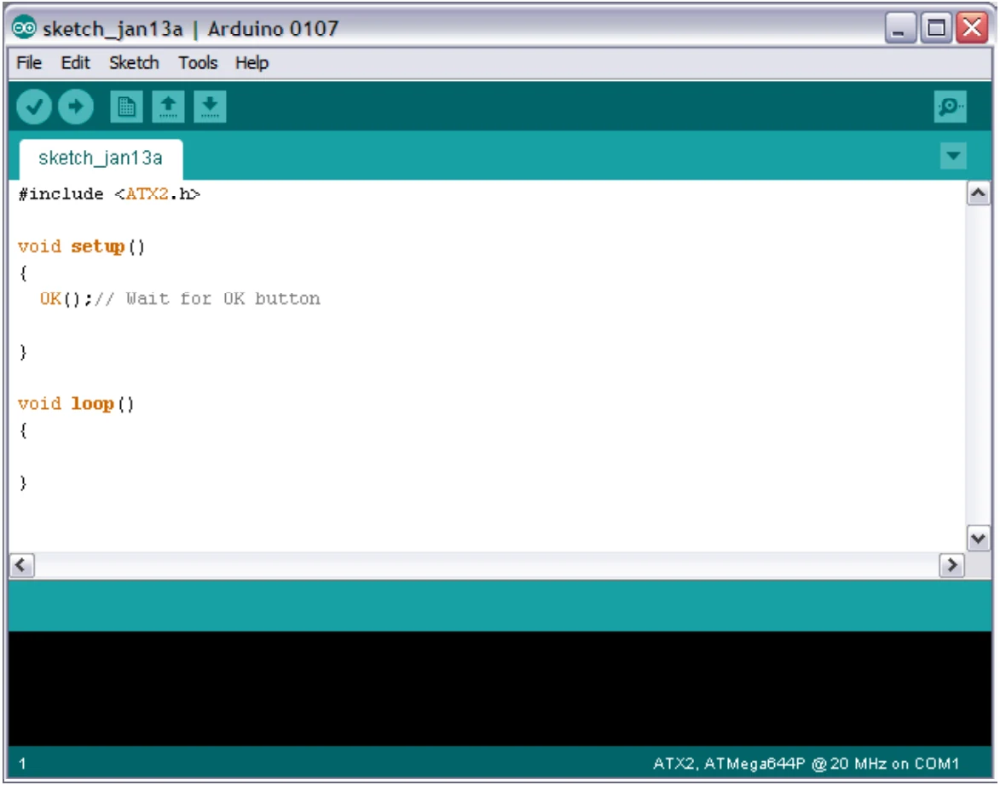

2.3.1 Software installation
(1) Insert the CD Rom, come with Robo-Creator2 robot kit. Click the file named Arduino1.0.7.1070_ReleaseSetup150123.exe (the number of the installation file may be changeable) and then the window of welcoming to the Arduino setup will appear.

(2) Next, click to agree in each step of the setup as installation of other applications of Windows until completion.
(3) Installing the Arduino 1.0.7 software by using the CD rom is bundled with Robo- Creator2 robot kit is the setup of both Arduino software and USB driver to connect with ATX2 controller board in the same time. After Arduino IDE is installed, the driver installation window will appear. Click on Next button to install the first USB driver. Wait until installation finish. Click on Finish button following the picture below.

(4) Next, the second USB driver will be install. Click on the Install button to start the driver installation. Wait until the installation is completed and finished.

(4) The hardware console window is appeared. This window will help programmer to prepare suitable library to support the chosen hardware. Select the ATX2 for ATX2 controller board and Robo-Creator2 robot kit and Click on the OK button again to confirmation.


(5) The Arduino IDE will be start.
(6) The main window of Arduino IDE will appeared. The default template will be loaded. User can start easy and reduce the error from missing the main library.

(6.1) See the first line of sketch. Default setting will include ATX2.h the main library at the first line
(6.2) The name of chosen hardware will show at the bottom of IDE; ATX2.ATmega644@20MHz on COMx (x is any COM port or USB serial port number).
Original manual, pages 10–13